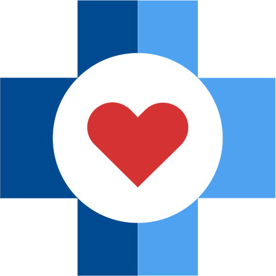

Научно-практическая конференция «Сложное целое: мать и дитя.
Врожденные пороки сердца (ВПС)»
Специализированный online-сервис для проведения конференций ‒ zoom.su
Начало в 9.00. Регистрация участников с 8.30 (время Московское)
Организаторы:
- Министерство здравоохранения Нижегородской области
- Приволжский исследовательский медицинский университет
- НРОО «Ассоциация организаторов здравоохранения»
- Специализированное издание ‒ газета «Мир фармации и медицины»
Оргкомитет:
- Козлова Елена Михайловна, д.м.н., главный внештатный специалист неонатолог Министерства здравоохранения Нижегородской области, профессор кафедры факультетской и поликлинической педиатрии ПИМУ, Н. Новгород ‒
руководитель программного комитета.
Тел. 8-906-358-37-48, e-mail: pediatrnn@list.ru. - Каткова Надежда Юрьевна, д.м.н., зав. кафедрой акушерства и гинекологии ФДПО ПИМУ, Н. Новгород.
- Новопольцева Екатерина Геннадьевна, д.м.н., доцент, зав. кафедрой факультетской и поликлинической педиатрии ПИМУ, Н. Новгород.
- Шахов Борис Евгеньевич, д.м.н., профессор, зав. кафедрой рентгенэндоваскулярной диагностики и лечения ФДПО ПИМУ, Н. Новгород.
- Максимов Антон Леонидович, к.м.н., главный внештатный специалист сердечно-сосудистый хирург Министерства здравоохранения Нижегородской области, главный врач СККБ им. академика Б. А. Королёва, Н. Новгород.
- Пичугин Владимир Викторович, д.м.н., профессор кафедры анестезиологии, реанимации и неотложной медицинской помощи ПИМУ, Н. Новгород.
Основные направления работы конференции:
- Вопросы прегравидарной подготовки.
- Генетика: консультирование, возможности диагностики.
- Ведение беременности в норме и при патологии.
- Беременные с врожденными пороками сердца.
- УЗ-диагностика патологии плода.
- Особенности ведения родов при патологии плода.
- Ведение родов у женщин с врожденными пороками сердца.
- Диагностика врожденных пороков сердца после рождения.
- Реанимация новорожденного в родовом зале.
- Респираторная терапия.
- Нутритивная поддержка (энтеральное и парентеральное питание).
- Тактика ведения новорожденных с критическими ВПС, нуждающимися в коррекции в первый месяц жизни, в т.ч. с дуктус-зависимыми пороками.
- Тактика ведения новорожденных с пороками, требующими коррекции в возрасте после первого месяца.
- Хирургическое лечение ВПС.
- Возможности рентгенохирургии в лечении ВПС.
- Анестезиологическое обеспечение кардиохирургических операций.
- Диагностика и лечение нарушений ритма сердца.
- Диагностика и лечение легочной гипертензии.
- Диагностика и лечение сердечной недостаточности.
- Кардиогенный шок.
- Гипоксическое повреждение ЦНС у детей с ВПС.
- Госпитальные инфекции: диагностика и лечение, особенности антибактериальной терапии у кардиохирургических пациентов.
- Особенности сопутствующей патологии у детей с ВПС (анемии, белково-энергетическая недостаточность, респираторные инфекции и т.д.).
- Реабилитация детей с врожденными пороками сердца.
- Катамнез, диспансерное наблюдение и вакцинация детей с ВПС.
- Профилактика респираторно-синцитиальной инфекции.
Дополнительная техническая информация
Заявка по мероприятию представлена в Комиссию по оценке учебных мероприятий и материалов для НМО на соответствие установленным требованиям.
К участию в конференции приглашаются врачи акушеры-гинекологи, анестезиологи-реаниматологи, неонатологи, педиатры, детские кардиологи, детские хирурги и кардиохирурги, врачи ультразвуковой диагностики и другие заинтересованные специалисты.
Участие специалистов бесплатное.
Вниманию слушателей!
- Для участия в мероприятии необходимо скачать и установить приложение ZOOM. Приложение поддерживается любым устройством (персональный компьютер, ноутбук, планшет, смартфон) и совместимо с любой операционной системой, также возможна работа напрямую через браузер.
- Для просмотра трансляции с возможностью получения баллов НМО — предварительная регистрация обязательна.
- Непосредственно перед началом видеоконференции участники, прошедшие предварительную регистрацию, получают уникальную ссылку для входа в конференц-комнату за 1 день до мероприятия и за 30 минут в день мероприятия.
- В день мероприятия войдите в приложение, введите идентификатор, подождите, когда организатор подтвердит вашу заявку, и начните просмотр.
- Время присутствия контролируется по автоматическому отчету, генерируемому порталом трансляции.
Контроль присутствия на мероприятии осуществляется путем нажатия слушателем на «всплывающее окно». Периодичность проверки присутствия происходит с разными временными промежутками. Интервал времени подтверждения присутствия участником составляет 3 минуты. Задержка с подтверждением более 3 минут будет считаться как «отсутствие» обучающегося (для участников НМО) на трансляции.
Минимально допустимое время присутствия ‒ 300 минут.
Количество контролей ‒ 7.
Количество подтверждений ‒ минимум 5.